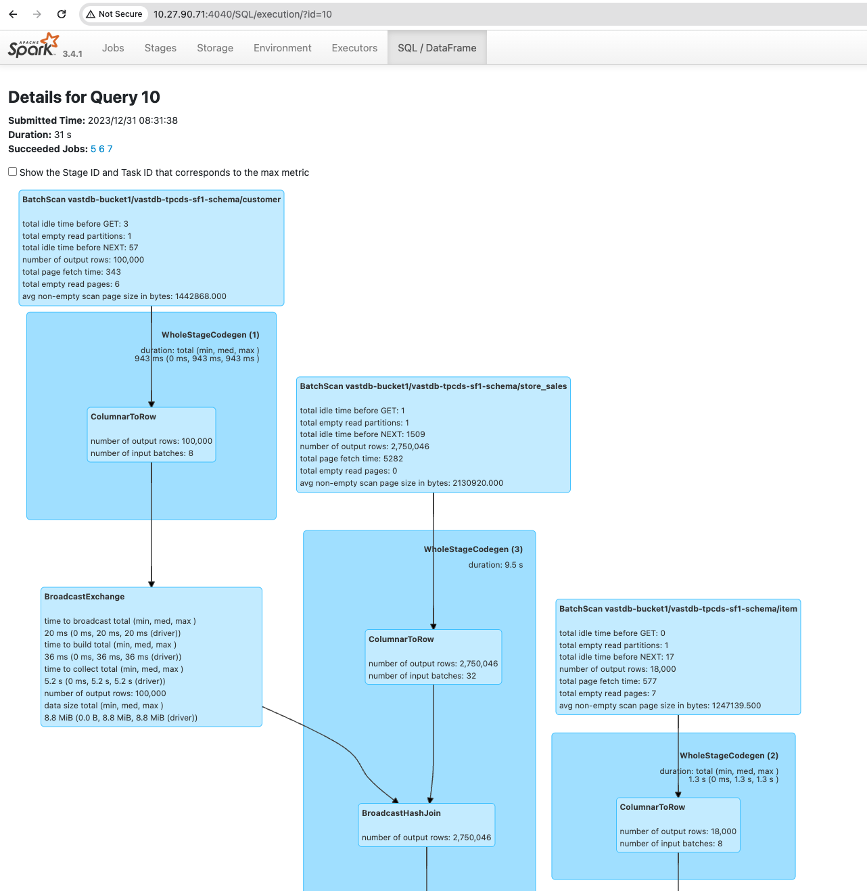

Spark Operations Guide#
Intro#
In the first section of this guide, we are going to perform data import to VAST-DB tables, for migration or other use-cases in which the data is exist on a tabular files - either locally or on S3 and should be ingested to VAST-DB tables.
The second part will walk you through a common SQL operations to demonstrate basic & advance sql-related usage on VastDB tables, using the spark-sql driver.
Prerequisites#
Spark 3.4.1 with scala 2.13 download
Java 1.8.0
VAST 4.7 or above
Spark is up and running with master and worker(s) & configured with VAST-DB
VAST-DB Bucket’s created & users have the needed user-identity-policy and roles to use database buckets.
S3 User Access & Secret Keys on VAST cluster KB article
Tabular Identity Policy with the proper permissions KB article
This is an example Identity Policy which will allow all S3 actions on all resources/buckets:
{
"Version": "2012-10-17",
"Statement": [
{
"Sid": "VisualEditor0",
"Effect": "Allow",
"Action": "s3:*",
"Resource": "*"
}
]
}
Spark Connector - Configuring VastDB with Spark vanilla#
Configuring Spark connector’s jars#
The spark-connector jars can be found in one of your VAST cluster’s CNODE’s
Specifically, inside the vast_platform docker container
Copy the spark-connector jar’s from the container to outside /tmp dir & create a tar.gz:
docker cp vast_platform:/vast/spark3 /tmp/spark3
tar -xczf spark_vastdb.tar.gz /tmp/spark3/*
Untar and copy to your host, where the spark is running.
Place it inside a dir which is easy to access, like: /opt/spark_vastdb
Using the examples below, you will see how a new spark session can be submitted, together with the spark_vastdb jars dir.
Configuring Spark global config with VastDB#
The Spark default config should have the next configuration block, in order to interact with VastDB:
endpoint is the IP address of the VAST Cluster
data_endpoint is the list of all IPs in the Virtual IP pool
#[VastDB]
spark.ndb.endpoint=http://172.19.124.1
spark.ndb.data_endpoints=http://172.19.124.1,http://172.19.124.2,http://172.19.124.3,http://172.19.124.4,http://172.19.124.5,http://172.19.124.6,http://172.19.124.7,http://172.19.124.8
spark.ndb.access_key_id=RW60SSX5SI..
spark.ndb.secret_access_key=/XSDz0N8S2FXuR..
spark.ndb.num_of_splits=8
spark.ndb.num_of_sub_splits=8
spark.ndb.rowgroups_per_subsplit=1
spark.ndb.query_data_rows_per_split=4000000
spark.ndb.retry_max_count=3
spark.ndb.retry_sleep_duration=1
spark.ndb.parallel_import=true
spark.ndb.dynamic_filter_compaction_threshold=100
spark.ndb.dynamic_filtering_wait_timeout=2
spark.sql.catalog.ndb=spark.sql.catalog.ndb.VastCatalog
spark.sql.extensions=ndb.NDBSparkSessionExtension
spark.python.authenticate.socketTimeout=1m
Running the PySpark data-frame insert#
Data-frame Spark write method Apache Spark docs. We are going to use a short PySpark scripts to make it more simple to follow.
Importing multiple Parquet files to VAST-DB table#
A way to run the script :
spark-submit --master spark:master-ip:7077 \
<pyspark_ingest_to_vastdb_df.py> \
<bucket-name> <database-name> <table-name> <files-dir>
The script will loop through all files with ‘parquet’ extension in the directory you have passed (recursively), and will try to read & ingest the retrieved data frame to a VastDB table.
The bucket needs to be created in advance, from the VAST-VMS UI, but Schema & Table names can be created by the script, by passing the names you want.
NOTE : If the Schema and Table is already created, it will append the data to the table, if columns schema match.
This script is accepting from the user
VAST-DB bucket name
DB/Schema name
Table name
The parquet file path
Absolute path
from pyspark.sql import SparkSession
import sys
import os
import glob
import time
if __name__ == "__main__":
if len(sys.argv) != 5:
print("Usage: spark-submit <pyspark_ingest_to_vastdb_df.py> <bucket-name> <database-name> <table-name> <files-dir>", file=sys.stderr)
exit(-1)
bucket_name, database_name, table_name, files_dir = sys.argv[1:5]
spark = SparkSession.builder \
.appName("PySpark Data Ingestion to VASTDB Catalog") \
.getOrCreate()
# Creating the database (schema)
spark.sql(f"CREATE DATABASE IF NOT EXISTS `ndb`.`{bucket_name}`.`{database_name}`")
# Base directory containing Parquet files
read_directory = files_dir
catalog_table_name = f"`ndb`.`{bucket_name}`.`{database_name}`.`{table_name}`"
# Ingest data for each Parquet file in the directory
total_start_time = time.time()
for file_path in glob.glob(os.path.join(read_directory, '**', '*.parquet'), recursive=True):
try:
file_start_time = time.time()
df = spark.read.parquet(file_path)
df.write.mode("append").saveAsTable(catalog_table_name)
file_end_time = time.time()
print(f"File {os.path.basename(file_path)} ingested in {file_end_time - file_start_time} seconds")
except Exception as e:
print(f"An error occurred while processing {file_path}: {str(e)}", file=sys.stderr)
total_end_time = time.time()
print(f"Total ingestion time: {total_end_time - total_start_time} seconds")
spark.stop()
Querying with Spark SQL in VAST Database with TPCDS data#
This demonstrates using Spark SQL / Py-spark SQL to query tables in the VAST Database. The examples will illustrate various SQL operations, from basic to complex.
Spawning Spark session using a Py-spark driver with VastDB#
A Python interface for Apache Spark, allowing for data processing and analysis using Spark’s features within Python scripts.
spark-submit --master spark://master-ip:7077 \
--driver-class-path $(echo /opt/spark_vastdb/*.jar | tr ' ' ':') \
--conf spark.executor.extraClassPath=$(echo /opt/spark_vastdb/*.jar | tr ' ' ':') \
--jars $(echo /opt/spark_vastdb/*.jar | tr ' ' ',') \
--conf spark.executor.userClassPathFirst=true \
--conf spark.driver.userClassPathFirst=true pyspark_transaction_example.py
Example: Running Py-Spark SQL with explicit transaction#
In PySpark, SQL functionality enables you to run SQL queries on DataFrames, allowing for complex data manipulation and analysis using familiar SQL syntax within a Python environment.
Using the spark.sql method you can run same sql operations / selects within a python script.
This approach is also enables the use of VastDB explicit transactions, to ensure ACID operations.
from pyspark.sql import SparkSession
# Initialize a Spark session
spark = SparkSession.builder.appName("VastDB SQL Transaction Example").getOrCreate()
try:
# Start transaction
spark.sql("SELECT ndb.create_tx()")
# Execute two insert queries atomically
spark.sql("""
INSERT INTO `ndb`.`vastdb-bucket`.`tpcds_schema`.`customer`
(c_customer_id, c_first_name, c_last_name)
VALUES ('1003', 'John', 'Foo')
""")
spark.sql("""
INSERT INTO `ndb`.`vastdb-bucket`.`tpcds_schema`.`customer`
(c_customer_id, c_first_name, c_last_name)
VALUES ('1004', 'Jane', 'Bar')
""")
# Commit the transaction
spark.sql("SELECT ndb.commit_tx()")
# Select to show added rows
updated_rows = spark.sql("""
SELECT c_customer_id, c_first_name, c_last_name
FROM `ndb`.`vastdb-bucket`.`tpcds_schema`.`customer`
WHERE c_customer_id IN ('1003', '1004')
""")
updated_rows.show()
except Exception as e:
print("An error occurred:", e)
# Rollback the transaction in case of an error
spark.sql("SELECT ndb.rollback_tx()")
# Stop the Spark session
spark.stop()
Spawning Spark session using Spark-sql driver with VastDB#
Here we show how to use spark-sql CLI to - a command-line tool for directly executing SQL queries on a Spark cluster which is configured with VastDB spark connector
spark-sql --master spark:master-ip:7077 \
--driver-class-path $(echo /opt/spark_vastdb/*.jar | tr ' ' ':') \
--conf spark.executor.extraClassPath=$(echo /opt/spark_vastdb/*.jar | tr ' ' ':') \
--jars $(echo /opt/spark_vastdb/*.jar | tr ' ' ',') \
--conf spark.executor.userClassPathFirst=true \
--conf spark.driver.userClassPathFirst=true \
--conf spark.sql.catalogImplementation=in-memory
Basic Data Retrieval#
Querying a Single Table
Operation: Retrieve specific columns.
SELECT c_customer_id, c_first_name, c_last_name
FROM `ndb`.`vastdb-bucket`.`tpcds_schema`.`customer`
LIMIT 10;
Explanation: Retrieves the first 10 records from the customer table, including customer ID, first name, and last name.
Filtering Data
Operation: Select data with conditions.
SELECT * FROM `ndb`.`vastdb-bucket`.`tpcds_schema`.`store_sales`
WHERE ss_ticket_number = 12345;
Explanation: Retrieves records from store_sales where the ticket number is 12345.
Aggregate Functions#
Summarizing Data
Operation: Aggregate data.
SELECT cs_item_sk, SUM(cs_net_profit) as total_profit
FROM `ndb`.`vastdb-bucket`.`tpcds_schema`.`catalog_sales`
GROUP BY cs_item_sk;
Explanation: Calculates the total net profit for each item in catalog_sales. Join Operations
Simple Join
Operation: Combining data from multiple tables.
SELECT c.c_customer_id, c.c_first_name, c.c_last_name, ca.ca_street_name, ca.ca_city
FROM `ndb`.`vastdb-bucket`.`tpcds_schema`.`customer` c
JOIN `ndb`.`vastdb-bucket`.`tpcds_schema`.`customer_address` ca
ON c.c_current_addr_sk = ca.ca_address_sk;
Explanation: Joins customer and customer_address tables to retrieve customer details along with their addresses.
Complex Queries#
Multi-table Join with Filtering and Sorting
Operation: Advanced join with filtering and ordering.
SELECT
c.c_customer_id,
c.c_first_name,
c.c_last_name,
ss.ss_sales_price,
ss.ss_quantity,
i.i_item_id,
i.i_item_desc,
i.i_category
FROM
`ndb`.`vastdb-bucket`.`tpcds_schema`.`customer` c
JOIN
`ndb`.`vastdb-bucket`.`tpcds_schema`.`store_sales` ss
ON c.c_customer_sk = ss.ss_customer_sk
JOIN
`ndb`.`vastdb-bucket`.`tpcds_schema`.`item` i
ON ss.ss_item_sk = i.i_item_sk
ORDER BY
ss.ss_sales_price DESC;
Explanation: A multi-join query using the customer, store_sales, and item tables, retrieves a detailed view of the sales transactions, combining customer information with details of the items they’ve purchased.
Data & Schema manipulations:#
Inserting Data
Insert a Single Row
INSERT INTO `ndb`.`vastdb-bucket`.`tpcds_schema`.`customer`
(c_customer_id, c_first_name, c_last_name)
VALUES ('1001', 'John', 'Doe');
Insert Multiple Rows
INSERT INTO `ndb`.`vastdb-bucket`.`tpcds_schema`.`customer`
(c_customer_id, c_first_name, c_last_name)
VALUES ('1002', 'Alice', 'Smith'), ('1003', 'Bob', 'Johnson');
Deleting Data
Delete Specific Rows
DELETE FROM `ndb`.`vastdb-bucket`.`tpcds_schema`.`customer`
WHERE c_customer_id = '1003';
Delete with Condition
DELETE FROM `ndb`.`vastdb-bucket`.`tpcds_schema`.`customer`
WHERE c_last_name = 'Johnson';
Altering Table Schema#
Add a New Column
ALTER TABLE `ndb`.`vastdb-bucket`.`tpcds_schema`.`customer`
ADD COLUMN c_phone_number STRING;
Drop an Existing Column
```sql
ALTER TABLE `ndb`.`vastdb-bucket`.`tpcds_schema`.`customer`
DROP COLUMN c_phone_number;
Monitoring SQL operations on Spark-driver UI#
The Spark UI, accessible at http://[driver-node]:4040, is an essential tool for monitoring Spark SQL queries.
SQL Tab: Displays a list of executed Spark SQL queries with status, duration, and detailed execution plans.
Query Details: Displays insights into logical and physical plans, job and stage info, and execution metrics like time and memory usage.
Performance Metrics: Shows execution times, task counts, shuffle read/write metrics, and memory usage for identifying bottlenecks.
Resource Utilization: Helps in tuning spark resource allocation by displaying how each executor contributes to query execution.
